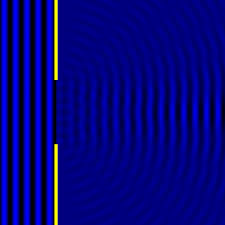

Kırınım desenleri, ışığın bir engel veya yarıkta geçerken gösterdiği karakteristik desenlerdir. Bu desenler, ışığın dalga özelliğine dayanarak oluşur. Polarizasyon ise, ışığın elektrik alanının yönüne bağlı olarak değişen bir özelliktir ve genellikle ışık ile etkileşim halindeki malzemelerin özelliklerini belirlemek için kullanılır.
